Vermouth, Quinquina & Americano in Mixed Drinks
There are countless cocktails and mixed drinks that employ vermouth. Many are redundant, but many reside at the apogee of the mixological craft. This collection focuses on classics—by which we mean highly reproduceable recipes that yield outstanding results, that we revisit over and over—where vermouths and quinquinas play a starring, or at least, co-starring role. We also direct special attention to the Martini and Manhattan cocktails because they are ubiquitous and because there’s more history and variation going on there than you probably were aware of.
Three things you’ll notice about cocktails that employ wines: they seldom involve fruit juice, they’re often best stirred with ice rather than shaken, and they tend to produce clear beverages.
A word about our sources: we went straight to the top. These books are the state of the art of cocktail research and analysis relevant to our discussion of aperitif wines. They are all in print. You should buy multiple copies of each.
Vermouth Cocktail
The Vermouth Cocktail is very “old school”—as in 150-year-old school—but deserves far more attention than it typically gets today in the United States. Why? First of all, it’s a first rate, elegant aperitif that elaborates on plain vermouth-on-ice. Second, it’s light. Sometimes you just don’t want a glass of booze. Problem solved.
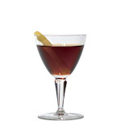
Vermouth Cocktail
2 oz vermouth (any)
1 dash Angostura bitters (or other)
Stir with ice and strain into a small stemmed glass.
Garnish with a lemon twist or an orange twist.
Note: can also be served on the rocks, but, to avoid overdilution, use refrigerated vermouth and a pre-chilled glass.
Manhattan
For the emergence and evolution of the seminal Manhattan, we will lean heavily on David Wondrich’s Imbibe!, which we believe represents the current authority. As a practical matter, the Manhattan is the rare mixed drink that is hard to completely fail at. Different whiskeys and vermouths may harmonize more at one proportion than others, but the result will pretty much always be at least drinkable. Probably the biggest danger is employing poor ice and over-diluting or under-chilling the drink.
Note that none of these recipes specify a cocktail cherry. If you are particularly fond of the “nuclear red” almond-flavored cherry that is now ubiquitous in the modern bar, by all means, throw one in. However, the cherry was not part of the original drink, and it is in no way essential to it. A nice touch is to macerate your own fresh cherries in Maraschino liqueur or use imported French Griottines (brandy-macerated Morellos).
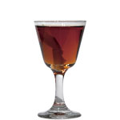
Manhattan (Old Standard, c. 1884)
1½ oz straight rye whiskey or bourbon whiskey*
1½ oz red vermouth
1-2 dashes orange bitters, Angostura Bitters or Peychaud’s Bitters
Stir with ice and strain into a chilled cocktail glass.
*Important: for best results, use a 100-proof or 101-proof whiskey.
(adapted from Imbibe!, p. 240)
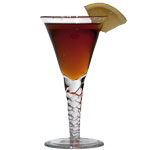
Manhattan (Reverse, c. 1887)
2 oz red vermouth
1 oz 100-proof straight rye whiskey
1 tsp Maraschino liqueur
3 dashes Fee’s Aromatic Bitters
Stir with ice and strain into a chilled cocktail glass.
Garnish with a slice of lemon.
(adapted from Imbibe!, p. 242)
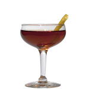
Manhattan (New Standard, c. 1892)
2 oz straight rye whiskey or bourbon whiskey*
1 oz red vermouth
¼ tsp. Maraschino liqueur (optional, but recommended)
1 dash Absinthe
2 dashes Angostura bitters
Stir with ice and strain into a chilled cocktail glass.
Garnish with a lemon twist.
*Important: for best results, use a 100-proof or 101-proof whiskey.
(adapted from Imbibe!, p. 243)
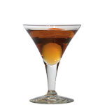
Rob Roy (c.1902)
2 oz Scotch whiskey
1 oz red vermouth
2 dashes Regan’s Orange Bitters No. 6
Stir with ice and strain into a chilled cocktail glass.
Garnish with an orange twist.
(adapted from Imbibe!, p. 253)
Martini
There is no single recipe or approach to the Martini. The only statement we can make with conviction is that a Martini contains gin and vermouth. The fact is the Martini is a messy evolution of an idea that began with the Manhattan and the rise of vermouth in the United States in the 1880s and 1890s. David Wondrich chronicles this as coherently as any in Imbibe! Lowell Edmunds makes the best supported case for a platonic ideal in his book, Martini, Straight Up, but Edmunds is surprisingly agnostic about formulae. The march from Prohibition through the latter 20th Century was unkind to this drink, reducing it to a bucket of chilled gin (or vodka), which may have suited some tastes, but disregarded that the Martini was actually supposed to be a cocktail, and an aperitif at that. Today, things are looking up for this drink, with the categorical revitalization of vermouth, the incredible array of superb gins on the market, and the resurrection of quality orange bitters. In the opinion of your editor, we have today arrived at the apotheosis of this evolution in the form of Audrey Saunders’ Fitty-Fitty, which is also surprisingly close to where the evolution began.
Note: dry vermouth was once yellower than it is now. Gin was, too, because it was often shipped in wooden barrels prior to bottling. Thus, early Dry Martinis were often pale gold in color, rather than water-clear. (Martini, Straight Up, p. 85).
Without further ado, here is an approximate chronological overview of the evolution of the Martini judiciously employing contemporary ingredients:
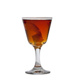
Turf Club Cocktail (1884)
1½ oz Old Tom Gin
1½ oz red vermouth
2-3 dashes Angostura bitters
Stir with ice and strain into a chilled cocktail glass.
Garnish with a lemon twist.
(adapted from Imbibe!, p. 244)
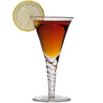
Martinez Cocktail (1887)
2 oz red vermouth
1 oz Old Tom Gin
1 tsp Maraschino liqueur
1 dash Angostura Bitters or Fee’s Aromatic Bitters
Stir with ice and strain into a chilled cocktail glass.
Garnish with a slice of lemon.
(adapted from Imbibe!, p. 245)
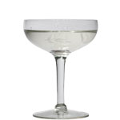
Marguerite Cocktail (1896)
2 oz Plymouth gin
1 oz dry vermouth
1 dash orange bitters
Stir with ice and strain into a chilled cocktail glass.
(adapted from Martini, Straight Up, p. 84)
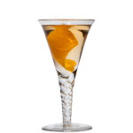
Dry Martini Cocktail (Hoffman House, 1906)
1½ oz Tanqueray Gin or Beefeater Gin
1½ oz Noilly Prat Original Dry Vermouth
1 dash Angostura Orange Bitters
Stir with ice and strain into a chilled cocktail glass.
Garnish with a lemon twist or an orange twist.
(adapted from Imbibe!, p. 247-8)
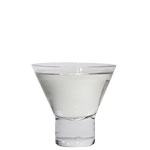
Gibson Cocktail (c. 1908)
1½ oz dry gin
1½ oz dry vermouth
Stir with ice and strain into a chilled cocktail glass.
No garnish. (If you have a fondness for pickled onions, please see the 1980s Martini, below)
(adapted from Imbibe!, p. 248)
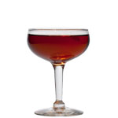
Fourth Degree (1931)
2 oz Plymouth Gin
1 oz red vermouth
1 dash absinthe
Stir with ice and strain into a chilled cocktail glass.
Garnish with a lemon twist.
(adapted from Imbibe!, p. 246)
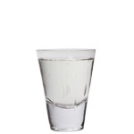
1950s Martini
3 oz gin or vodka
½ oz dry vermouth
1 dash orange bitters
Stir with ice and strain into a chilled cocktail glass.
Garnish with a pimento-stuffed olive or a lemon twist.
(Vintage Spirits & Forgotten Cocktails, p. 295)
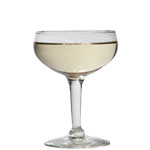
Vesper (1953)
3 oz Boodles Gin, Tanqueray Gin or Gordon’s Gin (UK)
1 oz vodka
½ oz Kina Lillet*
Shake with ice and strain into a chilled cocktail glass.
Garnish with a lemon twist.
*Try with Lillet Blanc or Cocchi Americano.
(Adapted from Vintage Spirits & Forgotten Cocktails, p. 277)
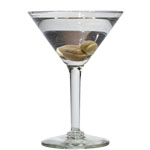
1980s Martini
3½ oz gin or vodka
1 scant splash dry vermouth
Shake with ice and strain into a chilled cocktail glass, or pour it on the rocks.
This version is as much about the garnish as anything else, so go with anything that pleases you: olives, cocktail onions, dilly beans, a spoonful of brine, … bacon?
Whatever.
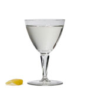
Fitty-Fitty (2009)
1½ oz Plymouth Gin
1½ oz Dolin Dry vermouth
2 dashes orange bitters
Stir with cracked ice and strain into a chilled cocktail glass.
Garnish with a lemon twist.
(Audrey Saunders, Pegu Club, 2009)
Other Classics
Now we turn to an array of wonderful drinks that feature aperitif wines. All of these are proven classics worth exploring, even if they don’t look good to you “on paper.” Again, these recipes are presented in rough chronological order.
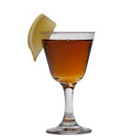
Saratoga Cocktail (c. 1887)
1 oz brandy
1 oz straight rye whiskey
1 oz red vermouth
2 dashes Angostura bitters
Stir with ice and strain into a chilled cocktail glass.
Garnish with a slice of lemon.
(adapted from Imbibe!, p. 255)
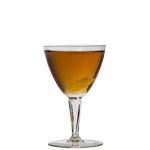
Bijou (c. 1900)
1 oz Green Chartreuse
1 oz red vermouth
1 oz Plymouth gin
1 dash orange bitters
Stir with ice and strain into a chilled cocktail glass.
Garnish with a lemon twist.
(adapted from Imbibe!, p. 258)
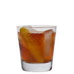
Negroni (c. 1920)
1½ oz gin
1½ oz red vermouth
1½ oz Campari
Pour all the ingredients into an ice-filled old-fashioned glass and stir briefly.
Garnish with an orange twist.
(The Bartenders’ Gin Compendium, p. 307)
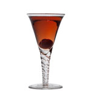
The Rose (c. 1920)
2 oz dry vermouth
1 oz kirshwasser
1 tsp raspberry syrup
Shake with ice and strain into a chilled cocktail glass.
Garnish with a cherry.
(Vintage Spirits & Forgotten Cocktails, p. 239)
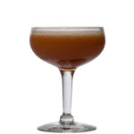
Blood and Sand (c. 1922)
1 oz Scotch whiskey
1 oz fresh squeezed orange juice
¾ oz Cherry Heering
¾ oz red vermouth
Shake with ice and strain into a chilled cocktail glass.
(adapted from Vintage Spirits & Forgotten Cocktails, p. 69)
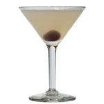
Corpse Reviver #2 (c. 1930)
1 oz gin
1 oz Cointreau
1 oz Lillet Blanc*
1 oz fresh squeezed lemon juice
1-3 drops absinthe or pastis
Shake with ice and strain into a chilled cocktail glass.
Garnish with a cherry.
*Try with Lillet Blanc or Cocchi Americano.
(Adapted from Vintage Spirits & Forgotten Cocktails, p. 95)
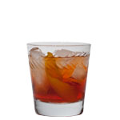
Vieux Carré Cocktail (c. 1937)
1 oz 100-proof straight rye whiskey
1 oz Cognac
1 oz red vermouth
½ tsp Benedictine
2 dashes Angostura Bitters
2 dashes Peychaud’s Bitters
Shake with ice and strain over fresh ice in a rocks glass.
Garnish with a lemon twist.
(adapted from Vintage Spirits & Forgotten Cocktails, p. 280)
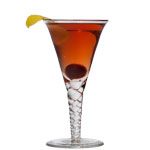
The Blackthorn Cocktail
2 oz gin
¾ oz Dubonnet Rouge
¾ oz kirschwasser
Stir with ice and strain into a chilled cocktail glass.
Garnish with a cherry and a lemon twist.
(Vintage Spirits & Forgotten Cocktails, p. 65)